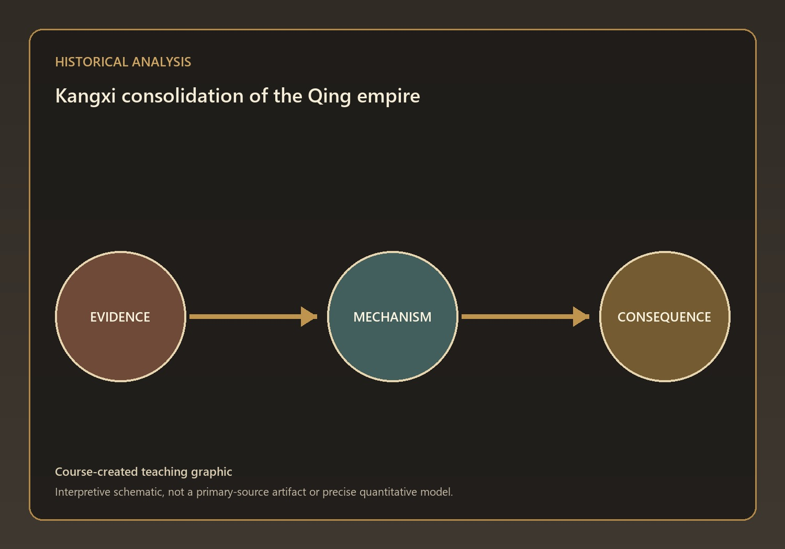
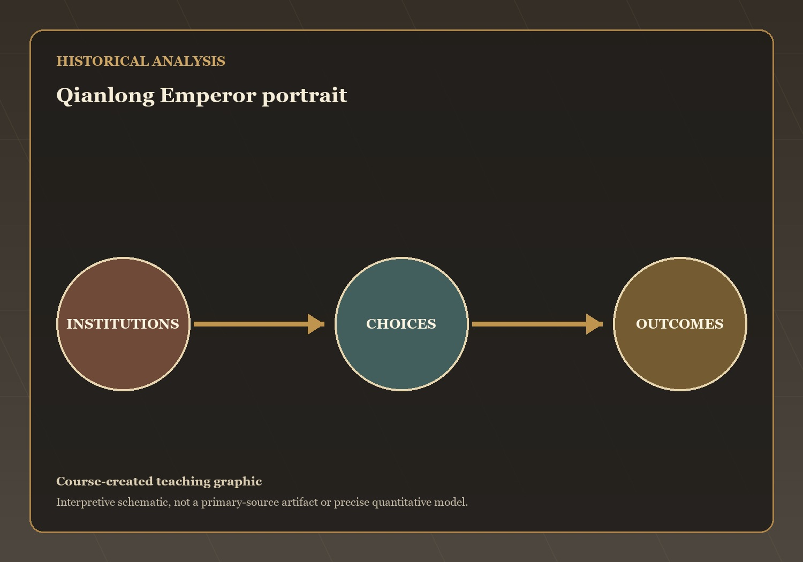
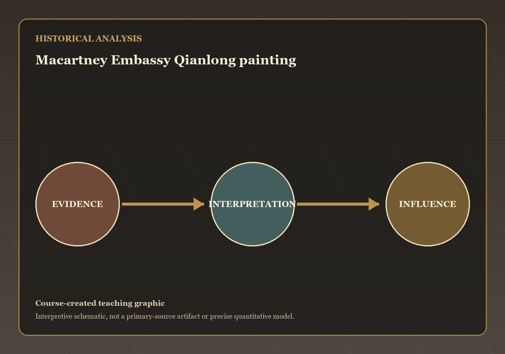
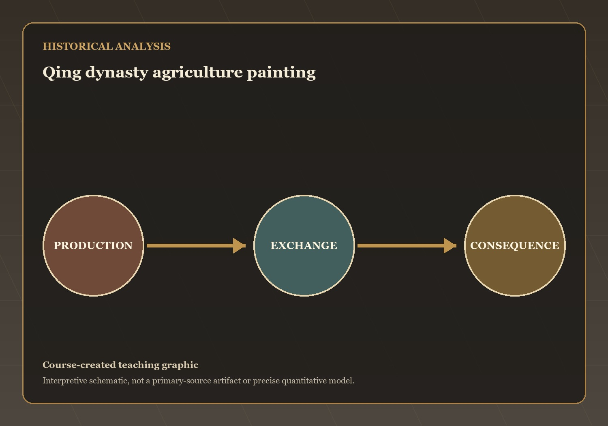

Questions and Problems
Mechanisms and Consequences
This lecture has treated how Kangxi and Qianlong governed a multiethnic empire amid demographic growth and European commercial pressure as a connected…
Q3 — evidence, mechanism, and consequence

Visual evidence for Q3
Kangxi strengthened Qing rule by combining military success, political legitimacy, and territorial expansion. He suppressed the Revolt of the Three Feudatories, incorporated Taiwan into…
What mechanism best explains this outcome? State your answer to Q3 as a causal claim.
Q5 — evidence, mechanism, and consequence

Visual evidence for Q5
Qianlong portrayed himself differently to different audiences. He acted as a Confucian sage-emperor for Chinese elites while also presenting himself as a Buddhist universal…
What mechanism best explains this outcome? State your answer to Q5 as a causal claim.
Q6 — evidence, mechanism, and consequence

Visual evidence for Q6
The Qing government confined European trade to Canton and regulated commerce through licensed merchants. Britain hoped to expand trade opportunities, establish formal diplomatic relations…
What mechanism best explains this outcome? State your answer to Q6 as a causal claim.
Q7 — evidence, mechanism, and consequence

Visual evidence for Q7
Population growth resulted from improved agricultural production, New World crops, favorable climate conditions, reduced disease pressures, and effective famine relief policies. While this growth…
What mechanism best explains this outcome? State your answer to Q7 as a causal claim.
The open question: which development in this lecture most changed the range of choices available to ordinary people, and is that change visible in…
The Conservative Turn and Social Margins — the next stage of the course narrative.
→ / Space: Next | ←: Previous | S: Notes | F: Fullscreen | O: Overview | ESC: Close popup